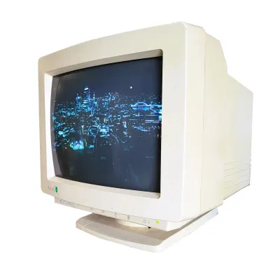

Que c'est excitant, l'aventure! Mais revenont au faits réels: je n'ais pas sorti tout cela des jardins de ma mémoire (de toute façon, elle fonctionne comme une HDD de 2003, ma mémoire). J'ai inclus cette page de référence pour offrir la transparence de mes recherches. Le contenu de ce site est tiré des notes de cours et de mes (longues) expériences avec les ordinateurs (et leurs pannes)!
Signé, Tasnim
IBM. (s. d.). What is an operating system? https://www.ibm.com/think/topics/operating-systems
Canonical. (s. d.). About the Ubuntu project. https://ubuntu.com/about
Microsoft. (s. d.). Virus and threat protection in Windows 11. https://learn.microsoft.com/en-us/windows/security/book/operating-system-security-virus-and-threat-protection
Microsoft. (s. d.). Windows hardware developer documentation: Windows drivers. https://learn.microsoft.com/en-us/windows-hardware/drivers/
Google. (s. d.). Google Docs Editors Help. https://support.google.com/docs/?hl=en
Norton. (s. d.). Antivirus. https://ca.norton.com/antivirus
|
 Retour à l'acceuil |